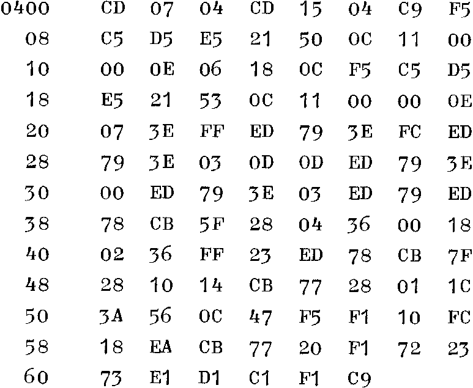
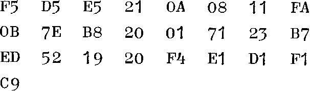

INMC News |
Christmas 1979 · Issue 5 |
| Page 11 of 38 |
|---|
This is also the case if you don’t want the results where I have put them.

Calling 0400 reads both joysticks, to read only one, call either 0407 or 0415, depending on which socket the joystick is plugged into. The format of the results is;
| 0C50 | Trigger A | 00 normal, FF if trigger pressed. |
| 0C51/2 | Pot A/1, A/2 | One byte for each pot in the joystick. |
| 0C53 | Trigger B | 00 normal, FF if trigger pressed, |
| 0C54/5 | Pot B/1, B/2 | One for each pot of other joystick. |
| 0C56 | Range Setting | The value set in this byte controls the |
| range of the results. For example, if 10 is used, each pot returns a number between 01 and 48, approximately. The smaller the number 0C56 is, the larger the range of the results becomes. | ||
Quite a lot, is the answer to that question, but a lot of it relates to the graphics board I mentioned in my earlier effort. There’s the spiral screen wipe, for instance; or the automatic graph plotting routine. Pretty boring, really, isn’t it? NO? In that case, here is one I use a lot, in games, and in “wall-paper” programs. It is relocatable, it is called SWAP, and it has the effect of replacing all of a given character on the screen with another. Just put the character you wish to remove in B and its replacement in C, the call this subroutine:

Those of you with sharp eyes will have spotted that I have used something from INMC News No 2, without which the routine would have been a lot longer, to compare HL and DE. Finding that proved the value of the club to me, and I only hope this lot does as much for your programs as that did for mine!
| Page 11 of 38 |
|---|